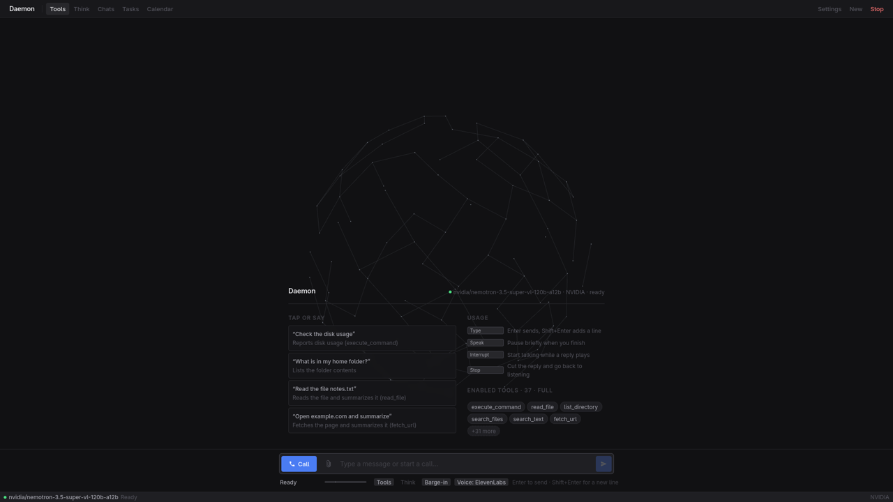

It does things
The model calls tools on your behalf: shell, files, web search, calendar, reminders, notes, Spotify. Scheduled tasks run on cron; background jobs let you keep talking while it researches.
Talk to it in your browser, on your phone, on Signal, or on a normal phone call. It runs on your own server; you choose the language model.
Examples: say “call me when the build is done” and your phone rings; say “remind me at 18:00 to call mom” and a Signal message arrives at 18:00.
One typed sentence: “open x.com and introduce yourself with a tweet.” Daemon opens the browser, looks at the screen, and writes the post with the mouse and keyboard. 82 seconds, no sound.

Everything here is in the repository today. Nothing is a roadmap item.
The model calls tools on your behalf: shell, files, web search, calendar, reminders, notes, Spotify. Scheduled tasks run on cron; background jobs let you keep talking while it researches.
Phone calls through Twilio. Talk hands-free with tools working mid-call, and talk over it to interrupt. It can also ring you when the build is done, or read you the morning plan.
Needs a paid Twilio number and one public HTTPS port for the webhook.
The model looks at a screenshot with a coordinate grid and uses the mouse and keyboard. Two switches, both off by default, plus an emergency stop file.
It runs on your server and you reach it over Tailscale. Nothing is exposed to the internet except the optional phone webhook. Whisper speech-to-text and the Kokoro voice run locally on CPU by default.
listening on 127.0.0.1:8000
Four ways in to the same assistant.
Daemon lives on an always-on machine. When your laptop is on, it lends Daemon a microphone, speakers and hands. When it is off, everything else keeps working. One computer is enough to start.
Tool profiles decide what the model may touch. Risky tools ask first. Scheduled tasks never get them at all. See the profiles
Any OpenAI-compatible provider with tool calling works. Set a base URL, a model name and a key.
One server process. Your devices talk to it; it talks to the model you picked and, when the laptop is on, to the agent running there.
The laptop agent is only needed when the server runs somewhere else.
Daemon can run commands and control a desktop on behalf of a language model. Treat it accordingly. These are the controls it gives you.
Every tool is listed below. Tools marked “asks first” wait for your approval.
read_filelist_directorysearch_filessearch_textwrite_filesend_fileexecute_commandsystem_infoget_timecalculateweb_searchfetch_urlremind_melist_reminderscancel_remindersend_messagecall_mecalendar_listcalendar_addcalendar_updatecalendar_deleteinbox_addinbox_searchinbox_recentinbox_deletestart_jobmedia_controlvolumeclipboard_readclipboard_writeopen_urlopen_appspotify_playspotify_devicesspotify_transferscreenshotcomputertool asks for your approval first, and is never given to scheduled tasks or background jobs.
execute_command and write_file wait for a yes, from the dashboard buttons or a reply on Signal.computer tool and the laptop agent must be started with --allow screen_input. Both are off by default. touch ~/.daemon-stop refuses all mouse and keyboard input until you delete the file.127.0.0.1. Reach it from your phone over Tailscale; never open port 8000 to the internet. Set a PIN for the dashboard..env with mode 600. Neither .env nor config.yaml is ever committed.None of this makes a language model trustworthy. It limits what a mistake can reach.
You need Linux, Python 3.10 or newer, and an API key from an LLM provider that supports tool calling. The speech models take about 2 GB of disk and 2 to 4 GB of RAM. No GPU needed.
git clone https://github.com/CircuitPhantom/Daemon.git
cd Daemon
./setup.sh
cp config.example.yaml config.yaml
cp .env.example .env && chmod 600 .env
venv/bin/python doctor.py
./install-service.shdoctor.py step, put DAEMON_LLM_API_KEY in .env and set llm.base_url and llm.model in config.yaml.http://127.0.0.1:8000. The first start downloads the speech models, which can take a few minutes.Read this before you spend an evening on it.
./setup.sh.